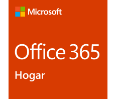
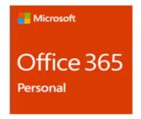
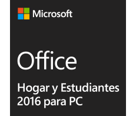
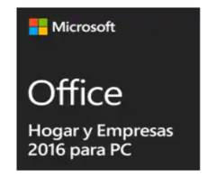
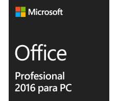

Office 365 Hogar
S/. 289.99 al año
S/. 28.99 al mes
• Suscripción anual o mensual. La
suscripción se renovará de forma
automática. Puedes cancelarla en
cualquier momento.
• Diseñada para 2 a 5 usuarios.
• Versiones prémium totalmente
instaladas de Word, Excel,
PowerPoint, OneNote y Outlook, con
características nuevas y exclusivas
todos los meses.
• Para usar en varias PC/Mac, tabletas
y celulares (incluye Windows, iOS y
Android).
• 1 TB de almacenamiento en la nube
en OneDrive cada uno, hasta para 5
usuarios.
• 60 minutos de llamadas por Skype
al mes para cada usuario, hasta para
5 usuarios.
• Soporte de expertos de Microsoft
por chat o por teléfono sin costo
adicional durante la suscripción.
Se harán cargos por la suscripción de
forma anual o mensual. Puedes
cancelarla en cualquier momento.
Compatible con Windows 7 o versiones posteriores y Mac OS X
10.10. Todos los idiomas incluidos.
Encuentra más información (como los
dispositivos móviles compatibles) en www.office.com/information.

Office 365 Personal
S/. 219.99 al año
S/. 21.99 al mes
• Suscripción anual o mensual. La
suscripción se renovará de forma
automática. Puedes cancelarla en cualquier momento.
• Disponible para 1 usuario.
• Versiones prémium totalmente
instaladas de Word, Excel,
PowerPoint, OneNote y Outlook, con
características nuevas y exclusivas
todos los meses.
• Para usar en 1 PC/Mac, tableta y
teléfono (incluye Windows, iOS y
Android).
• 1 TB de almacenamiento en la nube
en OneDrive.
• 60 minutos de llamadas por Skype
al mes.
• Soporte de expertos de Microsoft
por chat o por teléfono sin costo
adicional durante la suscripción.
Se harán cargos por la suscripción de
forma anual o mensual. Puedes
cancelarla en cualquier momento.
Compatible con Windows 7 o
versiones posteriores y Mac OS X
10.10. Todos los idiomas incluidos.
Encuentra más información (como los
dispositivos móviles compatibles) en
www.office.com/information.

Office Hogar y Estudiantes 2016
para PC
S/. 429.99
• Compra por única vez para 1
dispositivo
• Instalación en 1 PC
• Versiones 2016 clásicas de Word,
Excel, PowerPoint y OneNote
• Soporte de Microsoft incluido
durante 60 días sin costo adicional
• Licencia para uso doméstico
Compatible con Windows 7 o
versiones posteriores. Todos los
idiomas incluidos

Office Hogar y Empresas 2016 para PC
S/. 999.99
• Compra por única vez para 1
dispositivo.
• Versiones 2016 clásicas de Word,
Excel, PowerPoint, OneNote, Outlook
• Instalación en 1 PC
• Soporte de Microsoft incluido
durante 60 días sin costo adicional
• Licencia para uso doméstico y comercial
Compatible con Windows 7 o
versiones posteriores. Todos los
idiomas incluidos

Office Profesional 2016
S/. 1,799.00
• Compra por única vez para 1
dispositivo.
• Versiones 2016 clásicas de Word,
Excel, PowerPoint, OneNote,
Outlook, Publisher, Access
• Instalación en 1 PC
• Soporte de Microsoft incluido
durante 60 días sin costo adicional.
• Licencia para uso doméstico
y comercial.
Compatible con Windows 7 o
versiones posteriores. Todos los
idiomas incluidos